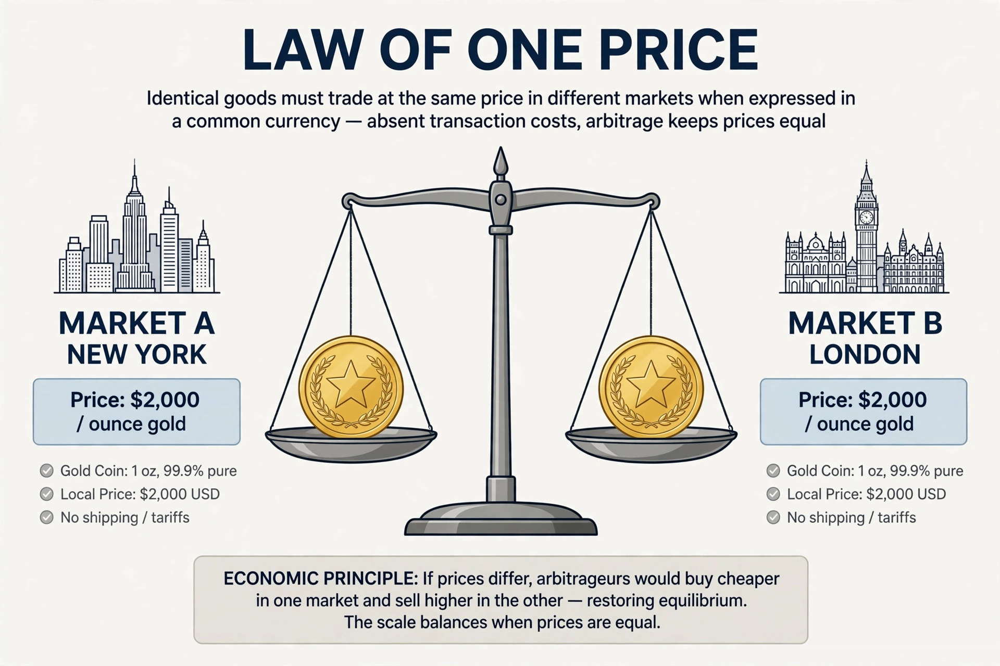

The law of one price (LOOP) states that in the absence of trade frictions and under conditions of free competition and price flexibility, identical goods sold in different locations must sell for the same price when prices are expressed in a common currency.

The law rests on arbitrage: if a good were cheaper in one market, traders would buy there and sell in the dearer market until prices converged. It underpins purchasing power parity and the efficient-market idea that identical assets should have one price.
LOOP is applied to commodities, financial assets and exchange rates. In practice it often fails due to transport costs, tariffs, taxes, non-tradable components, sticky prices and imperfect competition. The Big Mac index is a popular informal test.